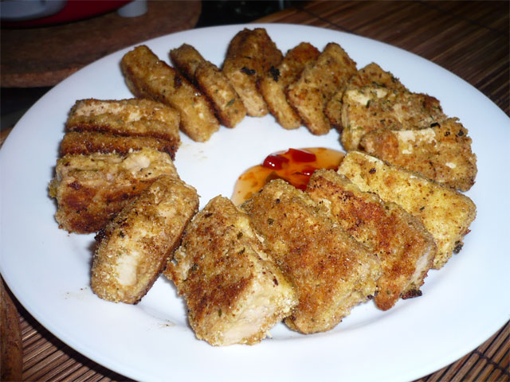

Vegan Breaded Tofu

(Image credit and license:
Think YUM!,
CC BY 2.0 )
Description
Easy and tasty breaded tofu recipe. A vegan main dish served with brown rice. It's delicious! I use sprouted
tofu, it's better for digestion!
Ingredients
- 1 tablespoon olive oil
- ¼ cup vegan mayonnaise (such as Follow Your Heart® Veganaise®)
- 2 tablespoons water
- ¼ cup bread crumbs, or as needed
- 1 (12 ounce) package tofu, sliced into 1/2-inch pieces
Steps
- Preheat the oven to 350 degrees F (175 degrees C). Coat the inside of a 9x13-inch baking dish with olive
oil.
- Stir mayonnaise and water together in a bowl. Place bread crumbs in a separate bowl.
- Dip tofu slices in the mayonnaise mixture; press tofu into the bread crumbs until fully coated. Place coated
tofu in the prepared baking dish.
- Bake in the preheated oven until tofu is fully cooked and breading is browned, about 45 minutes.
Home